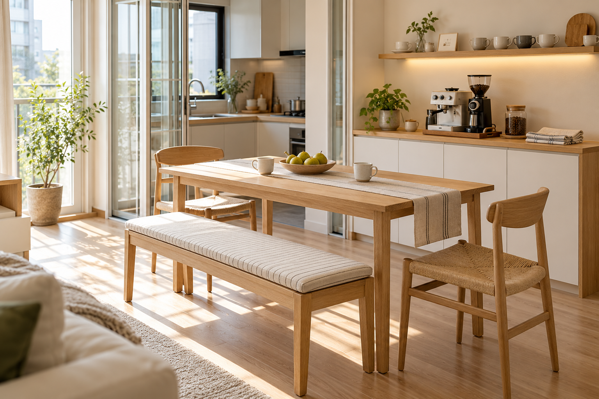
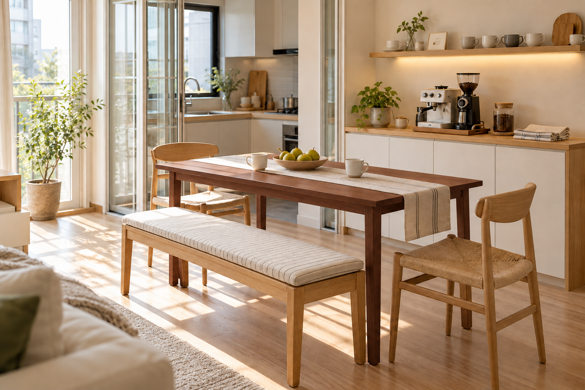

原方案 · 浅木餐桌
木色连贯，整体轻盈、柔和。


搭配试验 · 深樱桃木色餐桌
餐桌的轮廓更清楚，浅色背景依然明亮。

先让餐桌成为重点。
保留原有薄桌边与细腿，以哑光、偏暖棕的深木色增加分量；浅色椅子和织物让这一组家具保持轻快。
用小件呼应。
后续可以用一只深木托盘或一张小边几接住餐桌的颜色。大面积白柜、地板和层板继续保持浅色。
在同一个明亮餐厅里，试着让餐桌的木色深一点。保留浅木餐椅、条纹长凳、白色餐边柜与窗边绿意，看看这张桌子如何改变空间的层次。

木色连贯，整体轻盈、柔和。

餐桌的轮廓更清楚，浅色背景依然明亮。
先让餐桌成为重点。
保留原有薄桌边与细腿，以哑光、偏暖棕的深木色增加分量；浅色椅子和织物让这一组家具保持轻快。
用小件呼应。
后续可以用一只深木托盘或一张小边几接住餐桌的颜色。大面积白柜、地板和层板继续保持浅色。